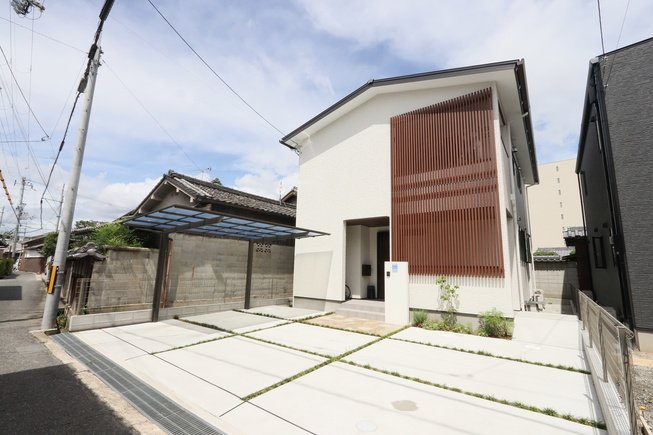
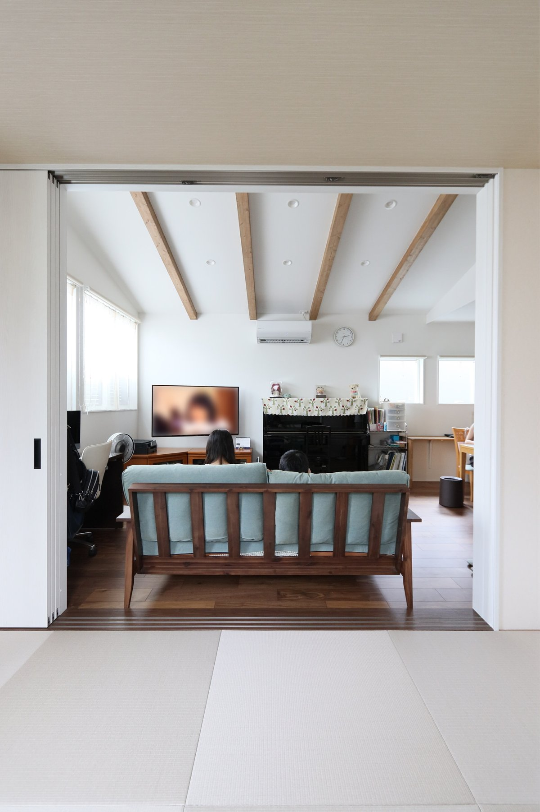

旧サイトに掲載していた取材記事より。
元々戸建てが良かったのですが、マンションを所有していました。
子どもが出来たことをきっかけに、マンション近くの土地を見に行きました。
違う工務店さんなども回っていましたね。
予算感が全く違う事もあったり。
それこそ建売も観に行った事もあったのですが、どうせ住むなら「自分達の想いが詰まったお家」がいいよなぁと思い、お家を建てる事に決めました。
シバサンホームは違う工務店の方からお教え頂いて、インターネットで調べました。
資料請求はせずに、直接お店に行かせて頂いきました。
シバサンホームの印象は、アットホームなイメージでしたね。
一番親身に相談に乗ってくれた想い出があります。
土地が中々決まらず、お家づくりに結構時間はかかったほうだと思います。
子供の学校関係もあって、初めから土地を買う場所は決まっていたので。
決まるまでは、沢山見学会へ行き、そのお家のこだわりを見ていました。
お家へのアイディアばかりが先に決まっていましたね。
色々打ち合わせをしていく中で、担当アドバイザーのおススメでAVANZがいいのではないかと提案して頂きました。
口頭でイメージを伝えてカタチにして頂いた感じです。
私は家事をしやすい事と、二階にリビングが欲しかったんです。
主人は家族が集まるリビングは広くという意見だったのですが、それに踏まえ「凄いと想ってもらえる」
様なアイディアや提案を沢山してくださいました。

中々実感は湧かなかったです（笑）
土地が中々決まらなかったのもあり、アイディアが先に沢山出てきたお家づくりでした。
その分沢山悩んで考えてお家づくりができたと思います。
2階リビングは私の意見なんです。1階に収まらなくて。
2階リビングでも、心地よく暮らす為に、外観に格子を付けました。
初めはびっくりしましたね。
下から2階くらいの高さまで格子を付ける事に違和感だったのですが、いざ住み始めると、凄く気に入っています。
西日部分に格子が付いているので、眩しくなる事もなく、格子の間からお昼は気持ちいい日差しが入るんです。
お昼は本当に照明要らずです。下まで格子がある事で、防犯上守られているのと、見えたくない物や自転車も置けてとても便利です。
外観はとても気に入っていて、提案して頂いて、良かったと思います。
その分、値段はかなり上がりましたが。それでも、後から後悔するより、どうせならカッコよくと思いました。
その分、色んな細かい部分では、コーディネータのコーディネーターさんが、テイストや好みに合わせた照明などを提案してくださり、助かりました。
私自身もネットでオシャレで可愛いものを調べていました。
照明は好きで、とくにこだわっています。
外観も内観もホワイトでシンプルなイメージに仕上げてもらったので、手作りの小物入れや収納での物などを、色々出来るのも嬉しいです。
住みやすいです。
コンセント問題に関しては、私達は逆につけすぎたかな？と思っています。
つかわない事が多い事もあります。
後はこの先、階段の上り下りは心配ですが…。
それでも2階がリビングでよかったですね。1階へは、寝にいくだけなので。
子供達も喜んでくれていて、ピアノスペースも皆が集まるリビングに置けたので、心地のいいピアノの音を聞きながら、優雅に過ごせます。
コンセント問題に関しては、私達は逆につけすぎたかな？と思っています。
つかわない事が多い事もあります。
それでも自分達が考えていた事がカタチになって、とても満足しています。